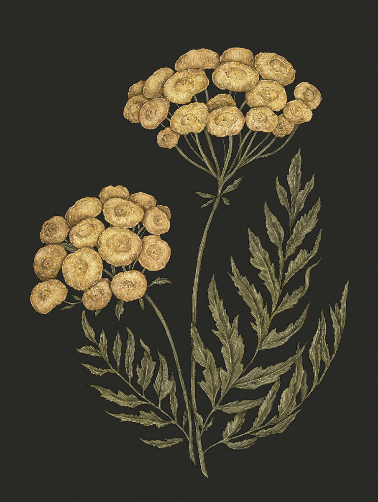

The Language of Flowers
Tansy

Tansy
Tanacetum vulgare
Victoria's Definition: I declare war against you
Meaning
Hostility
Origin
The tansy's folk medicinal uses may have given rise to its meaning. In the Middle Ages, the plant was
used in high doses to induce abortion and treat intestinal worms. Because the plant made people ill,
in Victorian times, sending a bouquet of tansy flowers was a way of declaring that the recipient had
made the sender sick to their stomach.
Pair With
- Anemone for a spurned lover
- Snapdragon for someone giving you a difficult time